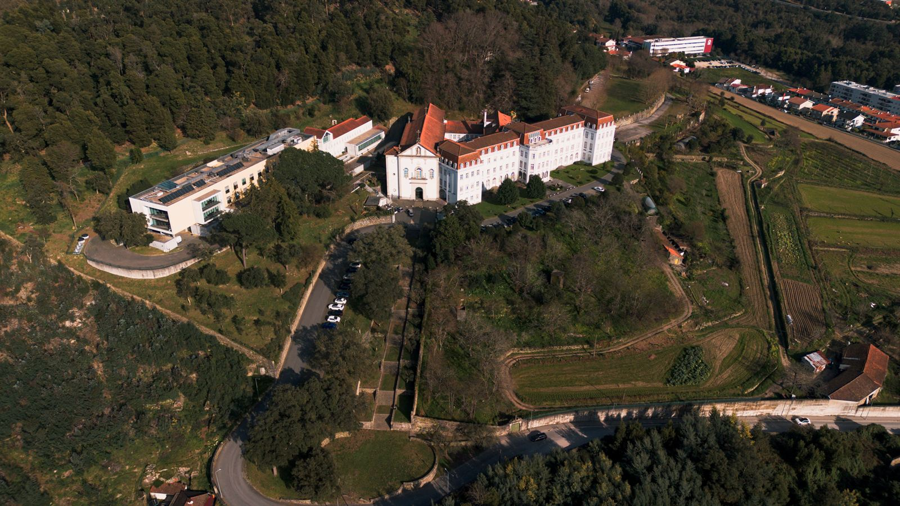
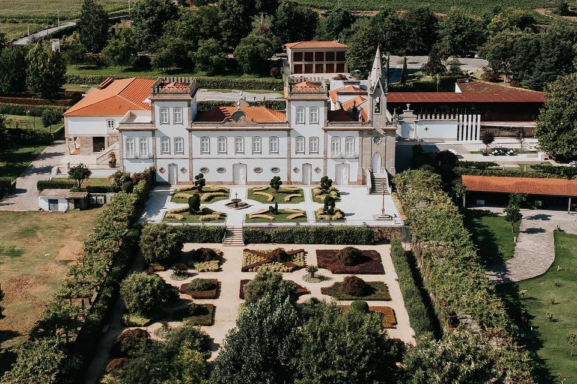
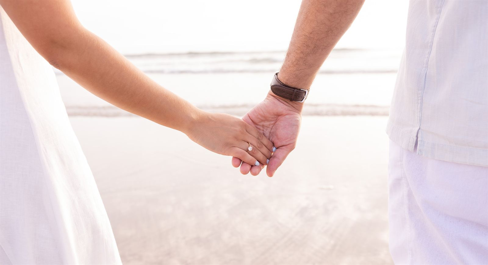

Vamos nos casar!
Ana & Bruno
Convidamos-vos a celebrar connosco o início desta nova etapa.
21 de agosto de 2026 · 12h15
0Dias
0Horas
0Minutos
0Segundos

“Escolhemo-nos todos os dias — e hoje fazemo-lo diante de quem mais amamos.”
Copo de água
Depois da cerimónia, vamos celebrar juntos em Vermoim, no Palácio da Igreja Velha.
Como chegar
- Local
- Palácio da Igreja Velha · Vermoim
- Data
- 21 de agosto de 2026
- Hora
- 14h30
Partilhem o vosso olhar connosco
Adorávamos ver este dia através do vosso olhar. Deixem-nos as fotografias e vídeos que tirarem para guardarmos todos os momentos, grandes e pequenos, deste dia.

Partilhar fotografiasCom carinho, Ana & Bruno